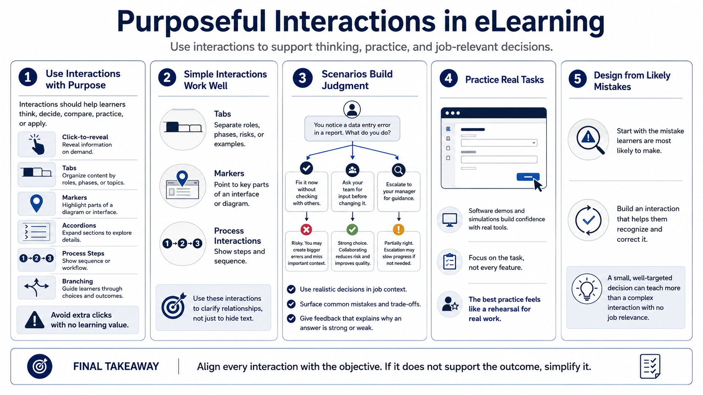

Interactions, Scenarios, and Practice
Connecting to LMS... Progress: in progress

Narration
Interactions are useful when they make learners think, decide, compare, practice, or apply. Click-to-reveal elements, tabs, markers, accordions, process interactions, and branching scenarios can break content into manageable pieces. They should not be added only because a screen looks too quiet. Extra clicks without purpose can create friction instead of engagement.
A simple interaction can work well when the objective is exploration or organization. For example, tabs may separate roles, phases, risks, or examples. Markers can call attention to parts of an interface or diagram. A process interaction can show sequence. These patterns are effective when the learner needs to understand relationships, not when the designer simply wants to hide text.
Scenarios are powerful because they place learning in context. A decision-based scenario asks learners to choose an action, see feedback, and understand consequences. The scenario does not need to be dramatic to be useful. It should reflect realistic decisions, common mistakes, and the judgment learners need on the job. Feedback should explain why an answer is strong or weak, not just say correct or incorrect.
Software demonstrations and simulations can help when learners need procedural practice. Keep them focused on the task, not every feature in the application. Align every interaction with an objective. If an interaction does not support the outcome, simplify it. The best practice activity feels like a rehearsal for real work rather than an obstacle placed between the learner and the next screen.
When designing practice, begin with the mistake learners are likely to make. Then create an interaction that helps them recognize and correct that mistake. This keeps the activity grounded in real performance instead of novelty. A small, well-targeted decision can teach more than a complex interaction that does not connect to the job.